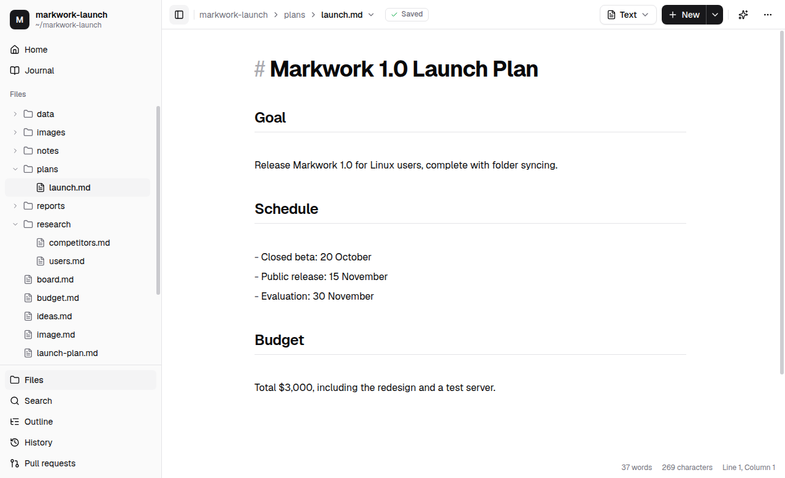
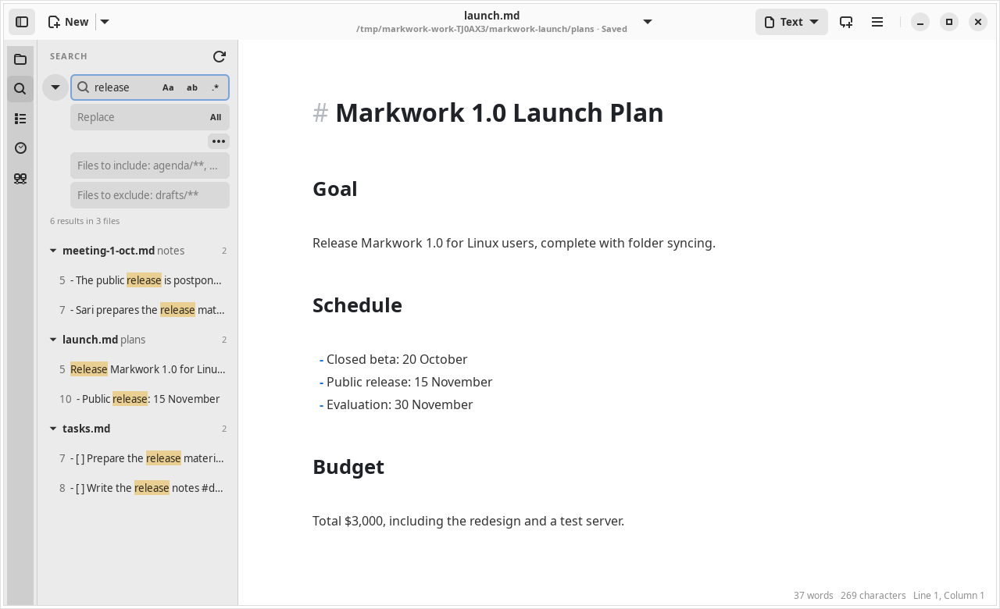
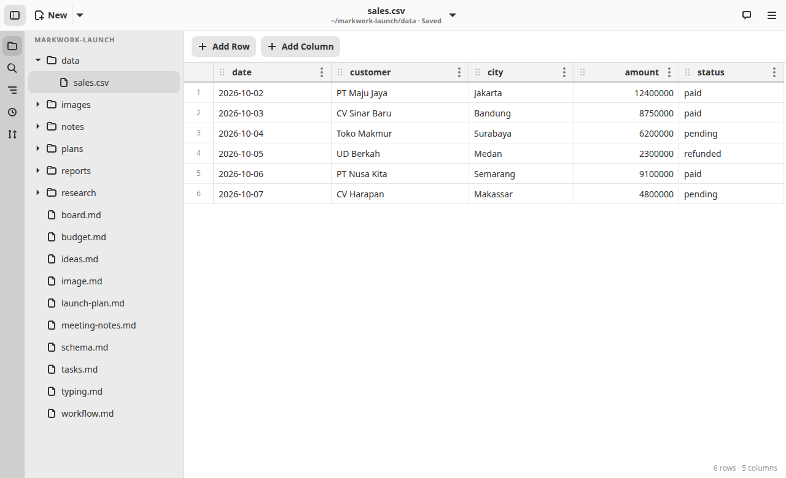
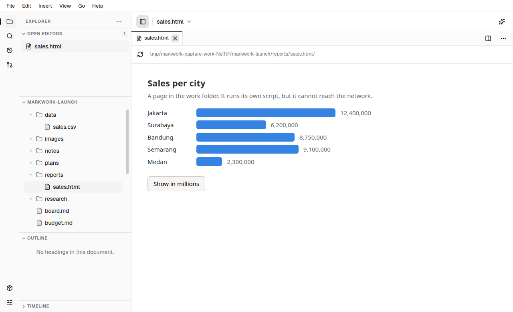
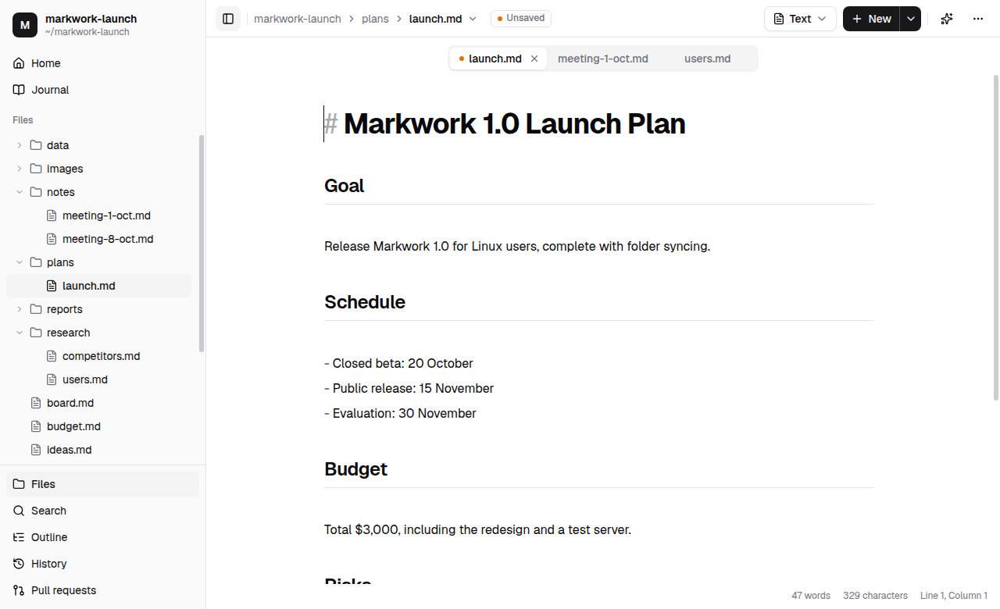

Workspace
Files, tabs, and the sidebar
Open a folder as a workspace, manage its files from the tree, and work on several documents at once as tabs.
The sidebar
The activity bar at the left edge is always there, and has the views: Files, Search, History, and Pull requests, with Programs (marked while something is missing) and Preferences at the foot. A view's button opens the sidebar on it, and the button of the view that is shown closes the sidebar. Ctrl+\ shows or hides the sidebar, and its edge is dragged to change its width (200 to 480 pixels; the width is kept).
- Files: made of sections (below)
- Search: search and replace in all the Markdown files of the work folder (Search in all notes)
- History: the Git commits of the open file and the files that are changing (Git history)
- Pull requests: the open pull requests of the folder's repository (Collaboration)
The Files view has four sections, each folded or unfolded by its header:
- Open Editors: the open documents, with the number open; a click shows one, and ✕ closes it. Once the editor is split they are grouped by pane.
- The work folder (named after it): the tree of its subfolders and all non-hidden files: Markdown documents, code and text files, CSV tables, HTML pages, and images. While the pointer is on its header, New File, New Folder, and Collapse Folders appear.
- Outline: the headings of the open document; click to jump.
- Timeline: the Git commits of the open file (folded at first; it is read only while it is open).
The open sections share the height of the view and are resized by the line between them. The ⋯ button in the view's title shows or hides each section, and Collapse All Sections folds them. Which are folded or hidden, and their sizes, are kept. Home and the journal are in the ☰ menu (Alt+Home, Ctrl+Alt+J).

The file tree
- Open a folder with Open Folder in the menu beside New or Ctrl+Shift+O. The last folder is opened again when the app starts.
- Right-click for New File…, New Folder…, New Kanban Board…, New CSV Table…, Rename…, and Delete (to the Trash, with a confirmation).
- Drag and drop to move a file or a folder. A conflicting name is rejected without overwriting, and an open document follows its new path.
- The tree updates automatically when a file is added or deleted on disk.
- Hidden files and folders and
node_modulesare not shown.
Read code and text files
Click a code or other text file in the workspace tree to open a read-only tab with line numbers and syntax highlighting. Grammars load only when needed; an unknown language stays plain text. Select text to copy it, and use Find above the code or Ctrl+F while the code has focus to search it. The Find bar uses the same appearance and search controls as Markdown, without Replace because code tabs are read-only. The shared status bar below the editor shows the focused code pane's cursor line and column, selected character count, UTF-8 encoding, original line endings (LF, CRLF, CR, mixed, or no line breaks), and total lines. When Markdown and code are open side by side, there is only one status bar below both panes: clicking Markdown restores its word/character counts, and clicking code restores that pane's code information. The pane bottoms stay aligned; code does not have a separate footer. Columns and selection counts treat an emoji as one character, not two UTF-16 units. Typing, paste, Delete, and Save do not change the file. Markdown, CSV, HTML, and images keep their existing views.
The viewer accepts regular UTF-8 text files up to 2 MiB. Binary files, unsupported encodings, symbolic links, and special files show an explanation rather than opening as text. Code is displayed, never executed.
A code tab is a snapshot: close and reopen it to read changes from disk. Moving, renaming, or deleting its file through the tree closes the snapshot. These tabs are not restored at startup and do not add code to the assistant's manuscript context, note links, or Search in All Notes. Reading code from a separate project or a card's worktree is not part of this viewer.
Search in all notes
Ctrl+Shift+F (or Search in All Notes in the command palette) opens the Search tab and puts the selected text in the field. Results appear as you type, grouped per file, with the matches marked; a click opens the file in a tab with the match selected.

- The three buttons inside the field are Match Case, Whole Words, and Regular Expression. A regular expression that does not compile marks the field red and the summary line says why.
- The summary line counts the results and the files. A search lists at most 1000 matches and says so when it stops. An unsaved tab is searched from its editor, not from the file on disk.
- The ··· button shows Files to include and Files to exclude, comma-separated patterns such as
agenda/**, *.mdanddrafts/**(*stays inside a folder,**crosses folders, a plain name matches that folder or file anywhere). The button stays highlighted while a filter is set. - The arrow to the left of the field opens the Replace field. All (or Enter in that field) asks first, then replaces every match in every listed file as one change. Files that are open can be undone with Ctrl+Z; the other files are written right away, so use Git (or turn off the files you do not want with a filter) if you need a way back.
- The refresh button searches again, for example after files changed on disk.
CSV tables
A .csv file opens as a table you edit in place. New CSV Table… (in the tree's right-click menu, or in the ☰ menu) asks for a name and makes name.csv with a header row and one empty row; rename the columns by editing the header.

- Click a cell and type. The cell is written to the file when you leave it or press Enter, so one edit is one undo step, and Ctrl+Z works as in any document.
- Enter moves down (and adds a row at the end), Shift+Enter moves up, Tab moves right (and adds a row after the last cell), Esc puts the old value back, and Ctrl+Enter inserts a row below.
- The row number and the ⋯ of a column header (or Shift+F10 in a cell) open the menu to insert a row above or below, insert a column left or right, and delete a row or a column. Add Row and Add Column are above the table.
- Ctrl+F opens the same search bar as the text editor above the table, with Match Case, Whole Words, and Regular Expression. The cells that match are marked, Enter and Shift+Enter go to the next and previous one, and Esc closes the bar and puts the cursor in the match you were at. Ctrl+H adds the Replace row: Replace changes every match in the current cell and goes on to the next, All changes every cell, and each is one undo step.
- Drag a row by its number, or a column by the grip in its header, and drop it between two others; a line shows where it will land, and the table scrolls when the pointer is near its edge. A drop is one undo step.
- The file stays plain CSV: its delimiter, line endings, and final line break are kept, and a row you did not change is written exactly as it was, so a Git diff shows only your edits.
- Ctrl+Shift+B switches between the table and the text of the file. A file of more than a million cells opens as text.
HTML pages
An .html, .htm, or .xhtml file in the tree opens in a tab of its own, marked with a page icon. The page runs its JavaScript, so a report, a chart, or a small tool you saved in the work folder is interactive.

- A page tab is not a document: there is no text to edit, nothing to save, and it closes without asking. It is not remembered for the next launch (the file tabs and Home are).
- Back and Reload (Ctrl+R or F5) are in the strip above the page. The page is shown again when its file changes on disk.
- The page can read the work folder it is in (its own folder when it is outside the work folder) and nothing else, and it can reach no network.
- A link in the page that points to the web is not loaded. Markwork shows the whole address and opens it in your browser only if you agree.
Many documents as tabs
- Opening a file from the tree or the Open File dialog makes a new tab, or switches to its tab if it is already open.
- Every tab has its own undo history, cursor, and scroll position. The
•mark means it is not saved. - Ctrl+W closes a tab; Ctrl+Tab / Ctrl+Shift+Tab switch tabs.
- When the app is opened again without arguments, the tabs with files are restored with their order, the active tab, and their cursor positions.
- The agent reads the contents of an unsaved tab, not the version on disk.
